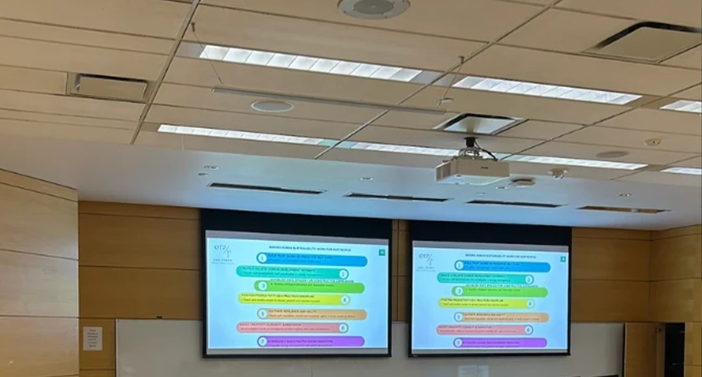

About Vaishali
A global change leader, telling a very human story.
Mental Health Speaker · Human Skills Strategist · Founder & CEO, oraHuman℠ — drawing on deep lived experience from two decades of leading global business transformation teams, and thriving as a parent, caregiver, youth advocate, classical dancer, and mountaineer.

The Full Bio
Strategy, blended with mental wellbeing
Vaishali Joshi is a Mental Health Speaker and Workplace Wellness Strategist who masterfully blends strategy with mental wellbeing in her work. She draws on a rare 20+ years of experience across eight industries in global business transformation leadership and energy-based mindset training.
A witty and multifaceted storyteller, Vaishali's keynotes leverage her lived experiences as a woman of color, immigrant, corporate executive, (step)parent, mountaineer, classically trained dancer, and youth advocate to make a compelling case to leaders about how to strategize and build wellness-based talent development plans and cultures that thrive sustainably through change.
Vaishali is also the Founder & CEO of oraHuman℠. Since 2023, her signature ORA Experience℠ program has empowered professionals and entrepreneurs to proactively ward off the threat of stress, anxiety, burnout, change fatigue, and disconnection so they can lead and belong to others with clarity and confidence. The mission is to help people build calmer, collaborative, and productive mindsets and communities.
“NOW is the most important time to learn how to open up your mind and perspective to change the way you view things that you are challenged with. NOW is the time to know how to find opportunity amidst adversity.” — Vaishali Joshi
Recognition & Media
A regular face on national and regional media
Vaishali is a global change leader and mental health speaker. Vaishali holds multiple designations as a leader in business and human transformation. In 2025, she was nominated for Canada's Women of Influence “Ones to Watch” award, Canada's top mental health advocate award for Workplace Wellness Leadership and Canada's top 25 immigrants award.
She has been featured on Canada's Speaker Slam stage, the Canadian Small Business Entrepreneur podcast, CHCH TV, OMNI TV and multiple magazines including Authority and Canvas Rebel — sharing her expert insights on mental health, human skills and sustainable performance.
Why oraHuman℠ exists
oraHuman℠ is Vaishali's contribution to address the present-day global epidemics of stress, burnout, distraction, and disconnection. Her work, as founder of oraHuman℠, empowers working professionals, parents and organizations to embrace strategic human skills development and “fortify” mental health so they may thrive as they work hard amidst the escalating chaos and unpredictable times we live in.
The Life Behind the Work
Mentor, dancer, caregiver, Torontonian
Through ORA Human℠, Vaishali acts to get more adults and children practicing mindfulness as a way to become dynamic change makers and positive influencers for themselves and the communities around them. She splits her voluntary time between two key demographics she is committed to — young aspiring corporate professionals and youth aged 12–20. She has been a long-time mentor and volunteer for the Project Management Institute, the Schulich School of Business and the Voice of Vedas youth community.
Formerly a trained Indian classical dancer, Vaishali is invited to anchor and moderate prominent community events. She has graced many well-known stages in Toronto such as Dusk Dance, Luminato, IIFA and Nuit Blanche. This part of her life truly celebrates the diversity that only Canada offers — to collaborate and co-create with artists and cultures from across the world.
Vaishali lives in Toronto. She is a step-mother to two beautiful girls aged 24 and 28 and mother to a 14-year-old son. She is also a caregiver to her aging parents, who courageously chose the new immigrant path from her place of birth, Kenya, in the early 90s.
Credentials
Business management & mindfulness studies
- Schulich School of Business
- Queen's University
- The Art of Living Foundation
- Eckhart Tolle School
- Isha Foundation
- Centre for Mindfulness Studies
Toronto stages include Luminato · IIFA · Nuit Blanche · Dusk Dance
Work with Vaishali.
Keynotes, the ORA Experience℠, or a program built for your team.